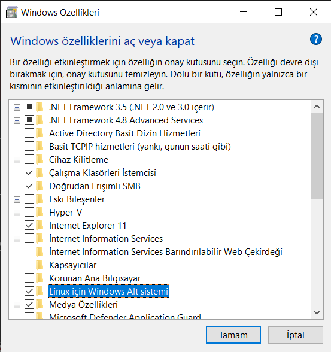
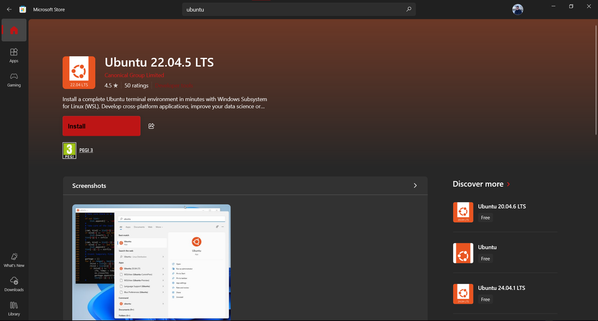
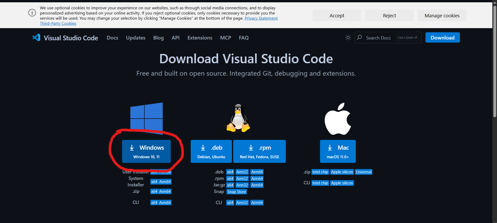
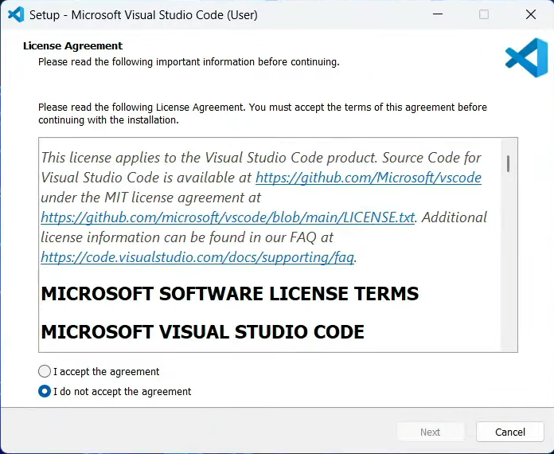
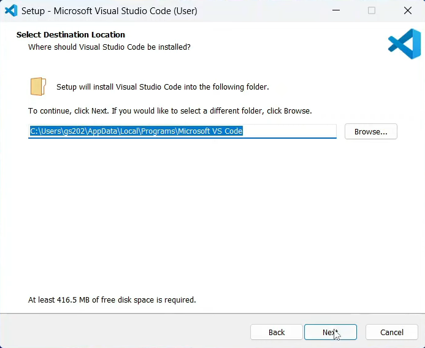
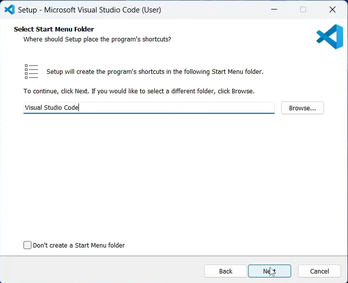
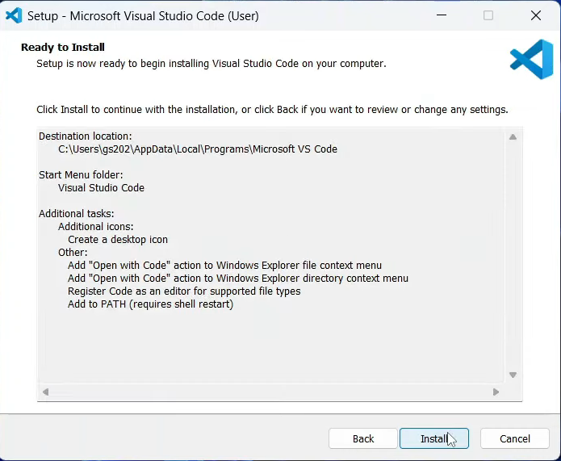
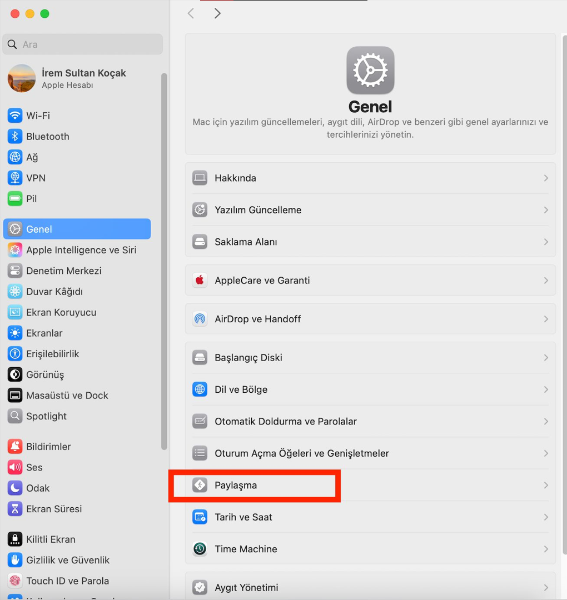

Kurulum ve Hazırlık Rehberi
Başlat menüsünü açın ve aramaya şunları yazın:
Açılan listede aşağılara inin ve "Linux için Windows Alt Sistemi" (Windows Subsystem for Linux) seçeneğini bulun.
Yanındaki kutucuğu işaretleyin ve "Tamam"a basın.
Lütden temiz bir kurulum için bilgisayarınızı yeninden başlatın.
Bilgisayarınızı yeniden başlattıktan sonra Microsoft Store'u açın. Arama kısmına "Ubuntu 22.04.3 LTS" yazın ve "Al" veya "Yükle" butonuna basın.
İndirme bitince Ubuntu'yu başlatın. Siyah bir terminal ekranı açılacak ve kurulum yapacaktır. Bittikten sonra sizden bir Kullanıcı Adı (username) ve Şifre (password) isteyecektir.
Eğer bilgisayarınızda VS Code yüklü değilse aşağıdaki adımları takip edin.
Buraya tıklayarak resmi sitesine gidin ve işletim sisteminize uygun (Windows) versiyonu indirin.
İndirdiğiniz dosyayı açın. Lisans anlaşmasını kabul edip "Next" (İleri) diyerek devam edin.
Kurulum yerini değiştirmeden varsayılan haliyle "Next" diyerek devam edin. (Kurulum dizinini değiştirebilirsiniz ama değiştirmemenizi tavsiye ederiz)
Başlat menüsü klasörü oluşturma ekranını da "Next" diyerek geçebilirsiniz.(Eğer başlat menüsünde oluşturulmamasını istiyorsanız alttaki tiki işaretleyin)
Bu ekranda, kullanım kolaylığı için tüm kutucukları işaretlemenizi öneriyoruz.
"Install" butonuna basarak kurulumu başlatın ve bittiğinde "Finish" diyerek kapatın.
Bootcamp sırasında dosya transferi yapabilmek için aşağıdaki ayarları açmanız gerekmektedir.
Apple menüsünden Sistem Ayarları (System Settings)'na girin. Kenar çubuğunda Genel (General)'e tıklayın ve sağ taraftan Paylaşma (Sharing) menüsünü açın.
Listeden Uzaktan Oturum Açma (Remote Login) seçeneğini bulun ve yanındaki (i) bilgi butonuna tıklayın.